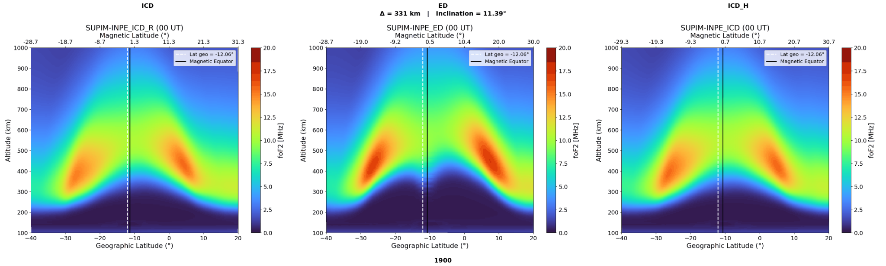

Numerical modeling
Geomagnetic configurations in SUPIM-INPE
Numerical simulations comparing centered inclined, eccentric inclined, and hybrid dipole representations to investigate geomagnetic geometry effects on ionospheric structure and F-region parameters over South America.
Related peer-reviewed article ↗